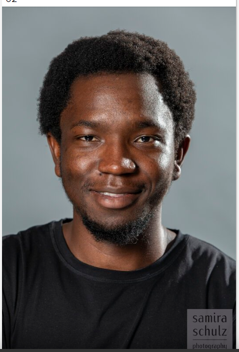

À propos de moi

Über mich
Ich bin ein Student der Angewandten Informatik mit einer großen Leidenschaft für Softwareentwicklung, Systemengineering und neue Technologien. Mein akademischer Werdegang hat mir solide Kenntnisse in der Web- und Mobile-Entwicklung, in Datenbankmanagement und in der Automatisierung von Prozessen vermittelt.
Im Laufe meines Studiums hatte ich die Gelegenheit, an verschiedenen Projekten zu arbeiten. von der Entwicklung von Anwendungen mit Flutter und Python (PyQt6) bis hin zur Implementierung von Softwarelösungen mit TinyDB und PostgreSQL. Darüber hinaus habe ich mich mit der Entwicklung von Webanwendungen mit Angular sowie mit IoT (Internet of Things) und Software-Defined Vehicles (SDV) beschäftigt.
Ich liebe es, mich neuen Herausforderungen zu stellen und mein Wissen durch praxisnahe und kollaborative Projekte zu erweitern, wobei ich moderne Methoden wie Continuous Integration und automatisierte Deployments anwende.
Kontakt aufnehmen